278 — Capstone financiero: pagos, auditoría y recuperación
Parte: 23 — Capstones por industria y defensa final
Nivel: experto · Horas estimadas: 8
Laboratorio: capstone · Estado: EXECUTABLE_CORE
🎯 Propósito
Capstone financiero: pagos, auditoría y recuperación. La clase da el encargo, la restricción que manda en este sector —hay que poder demostrar ante un tercero qué ocurrió, y el dinero no se puede perder ni duplicar—, las decisiones que de ahí se derivan, y las pruebas negativas que un auditor y un incidente real ejecutan de verdad.
📚 Resultados de aprendizaje
Al finalizar podrás:
- Identificar la restricción dominante del sector financiero.
- Diseñar un flujo de pago idempotente y reconciliable.
- Construir un rastro de auditoría que sirva como prueba.
- Definir objetivos de recuperación que la normativa exige y probarlos.
- Verificar el diseño con las pruebas negativas del sector.
🧩 Conceptos centrales
| Concepto | Comprensión verificable |
|---|---|
libro mayor de eventos |
Registro inmutable y ordenado de lo que ocurrió. El saldo es un cálculo, no un dato que se edita. |
partida doble |
Todo movimiento tiene origen y destino. Hace que el descuadre sea detectable por construcción. |
reconciliación |
Comparar lo propio con lo del tercero. En pagos, la verdad está fuera. |
idempotencia de cobro |
Reintentar un pago no cobra dos veces. Requisito absoluto, no deseable. |
rastro de auditoría |
Registro que permite reconstruir quién hizo qué, cuándo y con qué autorización, ante un tercero. |
objetivo de recuperación regulado |
Tiempo y pérdida de datos máximos exigidos por la norma, no elegidos por ingeniería. |
🧠 Modelo mental
El capstone no premia cantidad de servicios, sino trazabilidad entre contexto, decisiones, implementación, fallos, evidencia y aprendizaje.
Aplicado a esta clase, separa siempre cuatro planos: intención (qué necesita el usuario), configuración (qué declaramos), estado observado (qué existe de verdad) y evidencia (cómo sabemos que cumple). Confundirlos produce diseños que se ven correctos en un diagrama pero fallan al operar.
🗺️ Flujo de razonamiento

📖 Desarrollo
1. El encargo y la restricción que manda
El encargo. El brazo de pagos de CloudShop: cobros con tarjeta y transferencia en tres mercados, monedero de cliente con saldo, devoluciones y liquidación diaria a comerciantes. Sujeto a auditoría externa anual y a requisitos de continuidad del regulador.
CIFRAS DE PARTIDA
transacciones/día 41.000
importe medio 68 USD
monederos de cliente con saldo 340.000
comerciantes a liquidar 1.900
pasarelas integradas 3
auditoría externa anual, con
muestreo
y el requisito del regulador
recuperación < 2 horas
pérdida de datos admisible 0
Y la restricción que manda, que es doble y no técnica:
1 HAY QUE PODER DEMOSTRARLO ANTE UN TERCERO
no basta con que el sistema sea correcto
→ hay que poder reconstruir, meses después, qué pasó
con una transacción concreta, quién la autorizó y con
qué datos
→ y con evidencia que el auditor acepte: inmutable,
completa y con tiempo fiable
2 EL DINERO NO SE PIERDE NI SE DUPLICA
perder un pedido se compensa; perder un cobro, no
→ y cobrar dos veces cuesta más que no cobrar: genera
reclamación, coste de gestión y daño de marca
→ y de estas dos salen casi todas las decisiones del
capstone
→ nótese que ninguna es un requisito de rendimiento
Y la consecuencia que ordena el diseño:
EL SALDO NO ES UN DATO: ES UN CÁLCULO
no se guarda «saldo = 412,30» y se actualiza
se guardan los MOVIMIENTOS y el saldo se deriva
por qué
un saldo editado no tiene historia y no se puede
auditar
y una escritura perdida deja el saldo mal para siempre
sin dejar rastro ley 29
y qué se hace por rendimiento
saldos materializados con la posición del último
movimiento aplicado
→ y recalculables desde el origen en cualquier momento
→ esa recalculabilidad es lo que se enseña al auditor
Y la segunda pieza estructural:
PARTIDA DOBLE
todo movimiento tiene origen y destino, y la suma
cuadra
→ un descuadre se detecta por construcción, no por
casualidad
→ y la comprobación «la suma de todos los saldos es
igual a la suma de todas las entradas menos las
salidas» se ejecuta cada hora
→ es la comprobación de calidad más barata y más potente
de todo el capstone clase 243
2. El flujo de pago: idempotencia e incertidumbre
El problema central de pagos no es el éxito ni el fallo: es no saber.
LOS TRES RESULTADOS POSIBLES
éxito cobrado
fallo rechazado
y el tercero, que es el importante
SIN RESPUESTA
la pasarela no contestó, o contestó tarde, o la red
se cortó
→ puede haber cobrado o no
→ y reintentar sin más puede cobrar dos veces
→ un sistema de pagos se juzga por cómo trata el tercer
caso clase 201
Y el diseño que lo resuelve:
1 CLAVE DE IDEMPOTENCIA
la genera el cliente, no el servidor
→ misma clave, mismo resultado, siempre
→ y se conserva al menos 90 días
2 SE ESCRIBE ANTES DE LLAMAR
estado INTENTO en el libro, con la clave
→ si el sistema muere entre escribir y llamar, al
recuperarse sabe que hay un intento en el aire
3 EL ESTADO INCIERTO ES UN ESTADO DE PRIMERA CLASE
no un error
→ y tiene su propio proceso: consultar a la pasarela
con reintentos y retroceso hasta resolverlo
→ nunca se reintenta el COBRO: se consulta el ESTADO
4 MÁQUINA DE ESTADOS EXPLÍCITA
intento → cobrado | rechazado | incierto
incierto → cobrado | rechazado
cobrado → devuelto (parcial o total)
→ y las transiciones no permitidas se rechazan y se
alertan
5 Y RECONCILIACIÓN DIARIA
porque la verdad está en el tercero, no en nosotros
Y la reconciliación, que es la red de seguridad real:
CADA DÍA, CONTRA CADA PASARELA
nuestras transacciones frente a las suyas
y se clasifican los descuadres
en nosotros y no en ellos → posible cobro fantasma
en ellos y no en nosotros → cobro no registrado:
el más grave
importes distintos → error de conversión o
de comisión
estados distintos → incierto sin resolver
cada descuadre con DUEÑO y PLAZO
y un panel con la antigüedad del descuadre más viejo
→ un sistema de pagos sin reconciliación diaria no es un
sistema de pagos
→ y el número que importa no es «cuántos descuadres»:
es «cuánto tarda en cerrarse el más viejo»
3. Auditoría y recuperación
Lo que distingue este sector de los demás: hay que probarlo ante alguien de fuera.
QUÉ HACE ÚTIL UN RASTRO DE AUDITORÍA
INMUTABLE
escritura única; nadie con permisos de administrador
puede alterarlo ni borrarlo clase 255
COMPLETO
quién, qué, cuándo, desde dónde, con qué autorización
y con qué valores antes y después
CON TIEMPO FIABLE
reloj sincronizado y desviación vigilada
→ una discrepancia de relojes invalida una secuencia
ENLAZADO
la transacción, su intento, su reconciliación y su
liquidación, unidos por un identificador
Y CONSULTABLE
→ un auditor pide «enséñame esta transacción de hace
14 meses»
→ y si tarda tres días en salir, el control se
considera inefectivo
→ y el error más común: guardar registros y no poder
RECONSTRUIR una transacción concreta
Y el acceso a datos de pago, que también se audita:
nadie accede a datos de tarjeta en claro
→ tokenización desde el borde; el sistema propio nunca
los ve clase 251
todo acceso a datos de cliente queda registrado con
motivo
acceso de personas mediante elevación temporal
clase 256
y separación de funciones: quien despliega no aprueba
liquidaciones
Y la recuperación, que aquí no la elige ingeniería:
EL REGULADOR EXIGE
recuperación < 2 horas
pérdida de datos admisible: 0
→ y «0 de pérdida» cambia el diseño entero
replicación síncrona para el libro de movimientos
→ con el coste de latencia que eso implica
y confirmación al cliente solo tras la escritura
replicada
→ lo que NO exige cero pérdida
paneles, informes, catálogos de comerciantes
→ y separarlo permite pagar la replicación síncrona solo
donde hace falta
Y lo que la norma obliga a demostrar, no solo a tener:
restauración probada, con acta y con reloj
conmutación ensayada, al menos anualmente clase 261
procedimientos ejecutables y con fecha de última
ejecución clase 259
y registro de quién puede autorizar qué, revisado
→ y aquí la ley 22 deja de ser una observación y pasa a
ser un hallazgo de auditoría
4. Las pruebas negativas del capstone
Lo que hay que ejecutar. Varias de estas las ejecuta un auditor tal cual.
DE CORRECCIÓN DEL DINERO
☐ enviar el mismo pago 5 veces con la misma clave:
¿un solo cobro?
☐ enviar el mismo pago con claves distintas: ¿se detecta
el duplicado por otro medio?
☐ cortar la red justo tras llamar a la pasarela: ¿queda
en incierto y se resuelve solo?
☐ dos devoluciones simultáneas de la misma transacción:
¿una sola?
☐ devolver más de lo cobrado: ¿se rechaza?
☐ ¿la suma de saldos cuadra con los movimientos, ahora?
☐ recalcular todos los saldos desde el origen: ¿coincide
con lo materializado?
DE RECONCILIACIÓN
☐ ¿cuántos descuadres abiertos hay y cuál es el más
viejo?
☐ inyectar una transacción en la pasarela que no exista
en el sistema: ¿la detecta la reconciliación del día
siguiente?
☐ ¿qué pasa si una pasarela envía el fichero con 6 horas
de retraso?
DE AUDITORÍA
☐ pedir la reconstrucción de una transacción de hace 14
meses: ¿cuánto se tarda?
☐ intentar modificar un registro de auditoría con
permisos de administrador: ¿se puede?
☐ ¿qué desviación tienen los relojes de los servicios?
☐ ¿queda registrado quién consultó datos de un cliente
concreto y por qué?
DE RECUPERACIÓN
☐ restaurar el libro de movimientos: ¿cuánto tarda y
cuánto se pierde?
☐ conmutar de región con carga: ¿se cumplen las 2 horas?
☐ ¿la réplica síncrona está realmente síncrona? mátala y
comprueba
☐ ¿las copias sobreviven a un administrador comprometido?
DE OPERACIÓN Y ACCESO
☐ ¿alguien puede ver datos de tarjeta en claro?
☐ ¿quien despliega puede aprobar una liquidación?
☐ ¿hay credenciales permanentes con acceso al libro?
El entregable del capstone:
1 el modelo de datos del libro, con partida doble
2 la máquina de estados del pago, con el estado incierto
3 el diseño de reconciliación y su panel de antigüedad
4 el rastro de auditoría y una reconstrucción de ejemplo
5 el plan de continuidad con los números del regulador y
su prueba
6 la matriz de separación de funciones
7 el coste, incluido el de la replicación síncrona
8 y el resultado de las pruebas negativas, con lo que
falló
Y el cierre que enlaza con la clase siguiente: aquí el dato es dinero y hay que probar ante un tercero. En el siguiente sector el dato es una persona, el daño de una filtración no se compensa con dinero, y hay que compartirlo igualmente con otros. Salud, privacidad e interoperabilidad es la materia de la clase 279.
🔬 Ejemplo trabajado
El capstone resuelto. Lo que sigue es el estado incierto que apareció 41 veces al mes, la reconciliación que encontró 19 cobros no registrados, y la prueba de auditoría que suspendió la primera vez.
El estado incierto, medido.
transacciones/mes 1.240.000
éxito directo 1.238.900
rechazo ...
SIN RESPUESTA de la pasarela 41
→ 41 de 1,24 millones parece despreciable
→ y son 41 casos al mes de «puede que hayamos cobrado o
puede que no»
y lo que pasaba antes del rediseño
el sistema reintentaba el cobro
→ cobros duplicados detectados por reclamación 9/mes
→ coste de gestión por reclamación ~40 USD
→ y 4 de esos 9 acababan en incidencia con el banco
Y el rediseño:
estado INCIERTO explícito, con su proceso
consulta de estado a la pasarela, con retroceso
a los 5 s, 15 s, 60 s, 5 min, 30 min, 2 h, 6 h
y nunca se reintenta el cobro
resultado a los 6 meses
casos sin respuesta 43/mes
resueltos automáticamente en < 5 min 38
resueltos en < 6 h 4
escalados a persona 1
COBROS DUPLICADOS 0
→ y el usuario ve «estamos confirmando tu pago» durante
esos segundos, en vez de un error que le invita a
reintentar
→ ese texto, que parece cosmético, eliminó el 71 % de los
reintentos manuales del usuario
La reconciliación, primer mes.
primera ejecución contra las tres pasarelas, con 90 días
de histórico
transacciones nuestras 3.690.000
transacciones de las pasarelas 3.690.019
descuadres 61
en nosotros y no en ellos 9
→ intentos que nunca llegaron; sin impacto
EN ELLOS Y NO EN NOSOTROS 19
→ cobros reales no registrados
→ importe total 12.400 USD
→ antigüedad media 47 días
importes distintos 28
→ comisiones aplicadas distinto en
conversión de moneda
estados distintos 5
Y el análisis de los 19 graves:
17 de los 19 venían del mismo escenario
el proceso moría entre recibir la respuesta de la
pasarela y escribir en el libro
→ la pasarela había cobrado; nosotros no lo sabíamos
→ y el cliente había recibido el cargo sin ver el pedido
→ y ninguno había generado una alerta
→ los 17 se conocieron por reclamación del cliente, uno a
uno, o no se conocieron ley 29
corrección estructural
escribir el INTENTO antes de llamar
→ así el proceso de recuperación encuentra los intentos
en el aire al arrancar
y la reconciliación diaria como red final
resultado a los 12 meses
descuadres del tipo «en ellos y no en nosotros» 0
descuadres totales por mes 3-9
antigüedad del descuadre más viejo < 26 horas
Y la métrica que el equipo puso en el panel principal:
no «número de descuadres»
sino ANTIGÜEDAD DEL DESCUADRE MÁS VIEJO
→ porque un descuadre nuevo es normal
→ uno de 47 días es un fallo de proceso
La prueba de auditoría, que suspendió.
simulacro interno, antes de la auditoría real
el equipo de cumplimiento hizo de auditor
PETICIÓN 1
«reconstruye esta transacción de hace 14 meses:
quién la inició, con qué datos, qué autorizó la
pasarela, cuándo se liquidó al comerciante y quién ha
consultado esos datos desde entonces»
resultado
la transacción 9 minutos
la respuesta de la pasarela 2 días
→ estaba en registros archivados sin índice
la liquidación 4 horas
→ en otro sistema, sin identificador común
quién la consultó NO DISPONIBLE
→ no se registraban las consultas de lectura
→ SUSPENSO
→ y el hallazgo «no se puede demostrar quién accedió a
los datos de un cliente» es de los que cierran una
auditoría en mal lugar
Y las correcciones:
identificador de correlación único, presente en
transacción, respuesta de pasarela, liquidación y
registro de auditoría clase 211
respuestas de pasarela guardadas en almacén indexado y
consultable, 7 años, inmutable clase 255
registro de LECTURAS de datos de cliente, con motivo
→ y esto generó discusión: añade escrituras y volumen
→ se resolvió registrando por sesión y por cliente
consultado, no por consulta
y una consulta guardada que reconstruye una transacción
entera
resultado del segundo simulacro
reconstrucción completa 4 minutos
quién la consultó disponible
→ APROBADO
y la auditoría real, 4 meses después
hallazgos 2, menores
hallazgos del año anterior 11
La continuidad exigida por el regulador.
exigencia < 2 horas de recuperación, 0 de pérdida
diseño
libro de movimientos con replicación síncrona a una
segunda región
confirmación al cliente solo tras la escritura replicada
todo lo demás, asíncrono
coste de esa decisión
latencia añadida a la confirmación de pago +34 ms
coste de la replicación síncrona +19.000 USD/mes
→ y aplicarla a todo el sistema habría costado 71.000
la prueba, con reloj y con acta
conmutación completa con carga real
tiempo hasta servir tráfico 41 minutos
transacciones perdidas 0
descuadres tras la conmutación 0
→ y el acta se entregó al auditor
y el hallazgo del primer ensayo, 9 meses antes
la réplica «síncrona» estaba configurada como asíncrona
desde una migración
→ se descubrió matándola: se perdieron 4 transacciones
en el ensayo
→ en producción habrían sido reclamaciones sin
explicación ley 15
Las cifras finales del capstone.
```text antes después cobros duplicados 9/mes 0 cobros no registrados 19/90 días 0 antigüedad del descuadre más viejo 47 días 26 h reclamaciones por pago 41/mes 6/mes
reconstrucción de una transacción antigua 2 días 4 min registro de lecturas de datos de cliente no sí hallazgos de auditoría 11 2
conmutación de región probada, con acta no 41 min pérdida en la conmutación n/d 0 replicación síncrona verificada no (era asíncrona) sí
coste mensual adicional por continuidad - 19.000 USD coste de las reclamaciones evitadas (estimado) - 16.800 USD
**La lección que este capstone deja**: 41 transacciones al mes sin respuesta parecen despreciables sobre 1,24 millones, y eran **9 cobros duplicados al mes** hasta que el estado incierto dejó de tratarse como un error y pasó a ser un estado con su propio proceso. Y la réplica que garantizaba **cero pérdida de datos ante el regulador llevaba meses configurada como asíncrona**: solo se supo al matarla en un ensayo.
## 🧪 Laboratorio guiado
Ejecuta desde la raíz:
```bash
python classes/part-23-industry-capstones/278-capstone-financiero-pagos-auditoria-y-recuperacion/lab.py
El laboratorio selecciona el motor de práctica capstone y produce
lab_result.json. El escenario, sus comprobaciones y el artefacto esperado corresponden a
esta clase; no requiere credenciales y deja explícito qué debe revalidarse en un sandbox real.
- Lee
exercise.stepsy formula una predicción antes de ejecutar. - Ejecuta la práctica y verifica todos los elementos de
checks. - Provoca el caso de
negative_testy explica la señal observada. - Materializa
finance-capstoneenevidence/usando la plantilla indicada. - Para proveedor real, sigue
sandbox.requires, registra costo y ejecutadestroy.
Evidencia esperada
El artefacto principal es un incremento integrado, demostrable y documentado. Además, la entrega debe incluir el comando ejecutado, la salida estructurada y una conclusión que no exceda lo observado.
🏆 Reto verificable
Construye finance-capstone para el caso CloudShop. Incluye una alternativa descartada,
un supuesto que pueda falsarse, una prueba de fallo y una decisión de rollback.
✅ Criterio de aceptación
- [ ]
lab.pytermina con código 0 y genera JSON válido. - [ ] La entrega conecta al menos tres requisitos con mecanismos verificables.
- [ ] Existe una prueba positiva y una prueba negativa con evidencia.
- [ ] Seguridad, costo y operación aparecen como decisiones, no como anexos.
- [ ] Se declara una limitación y una condición que obligaría a revisar el diseño.
- [ ] Otra persona puede repetir el recorrido sin conocimiento tácito.
⚠️ Errores frecuentes
| Síntoma | Causa probable | Corrección |
|---|---|---|
| Aparecen cobros duplicados en las reclamaciones de clientes | Se reintenta el cobro cuando la pasarela no responde | Trata la ausencia de respuesta como estado incierto de primera clase: nunca reintentes el cobro, consulta el estado con retroceso hasta resolverlo. |
| Hay cobros del banco que el sistema no tiene registrados | El proceso muere entre recibir la respuesta y escribir, y no hay reconciliación | Escribe el intento antes de llamar y reconcilia a diario contra el tercero; vigila la antigüedad del descuadre más viejo, no su número. |
| El auditor pide reconstruir una transacción antigua y se tarda días | Los registros existen en sistemas distintos sin identificador común ni índice | Usa un identificador de correlación en toda la cadena, guarda las respuestas del tercero en almacén indexado e inmutable y deja la consulta preparada. |
| No se puede demostrar quién consultó los datos de un cliente | Solo se registran escrituras, no lecturas | Registra los accesos de lectura con motivo, agregando por sesión y cliente consultado para que el volumen sea manejable. |
| El saldo de un cliente quedó mal y no hay forma de saber por qué | El saldo se guarda y se edita en vez de derivarse de los movimientos | Guarda movimientos con partida doble y materializa el saldo con la posición aplicada; comprueba cada hora que la suma cuadra. |
| La replicación que garantizaba cero pérdida no era síncrona | Una migración cambió la configuración y nadie lo comprobó | Mata la réplica en un ensayo y mide la pérdida real; una garantía no verificada no es una garantía. |
🛡️ Seguridad, ética y costo
Trabaja con cuentas propias o sandboxes autorizados. No publiques secretos, identificadores reales ni datos personales. Antes de crear recursos pagos define presupuesto, etiquetas y comando de destrucción; después verifica que no queden recursos huérfanos. Los ejemplos locales enseñan contratos, pero no certifican cumplimiento ni disponibilidad de producción.
❓ Preguntas de comprobación
- ¿Cuáles son las dos restricciones que mandan en este sector?
- ¿Por qué el saldo debe ser un cálculo y no un dato?
- ¿Cómo se trata la ausencia de respuesta de una pasarela?
- ¿Qué hace que un rastro de auditoría sirva ante un tercero?
- ¿Qué prueba revela que una réplica síncrona no lo es?
🔗 Referencias
- PCI Security Standards Council (2024). PCI DSS v4.0. https://www.pcisecuritystandards.org/document_library/
- AWS (2024). Financial Services Industry Lens, Well-Architected Framework. https://docs.aws.amazon.com/wellarchitected/latest/financial-services-industry-lens/financial-services-industry-lens.html
- Microsoft (2024). Azure financial services regulatory compliance. https://learn.microsoft.com/azure/industry/financial/
- Helland, P. (2007). Life beyond distributed transactions. https://queue.acm.org/detail.cfm?id=3025012
- Banco de Pagos Internacionales (2021). Principles for operational resilience. https://www.bis.org/bcbs/publ/d516.htm
- Documentación oficial vigente del servicio implementado; registra URL y fecha de consulta.
📥 Descargar: Parte 23 en PDF · Manual integral